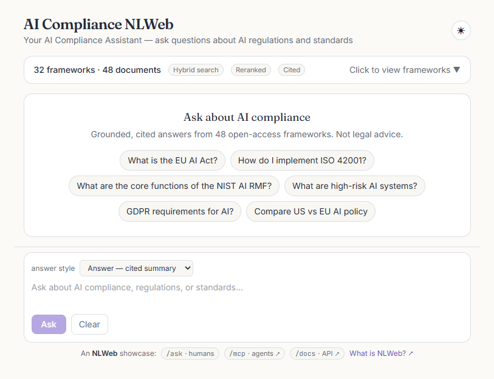
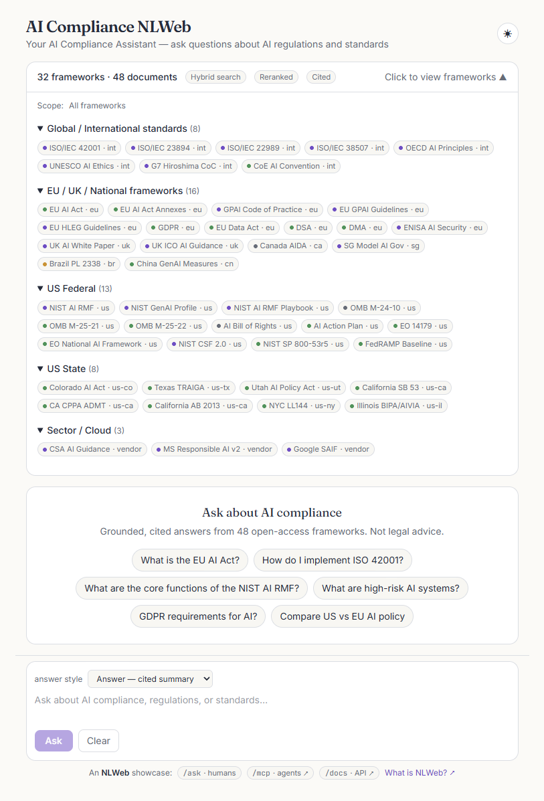
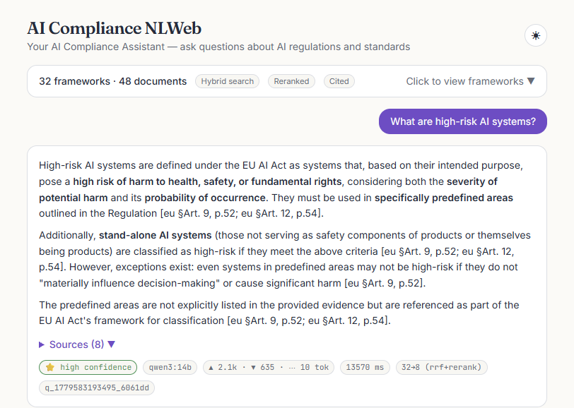
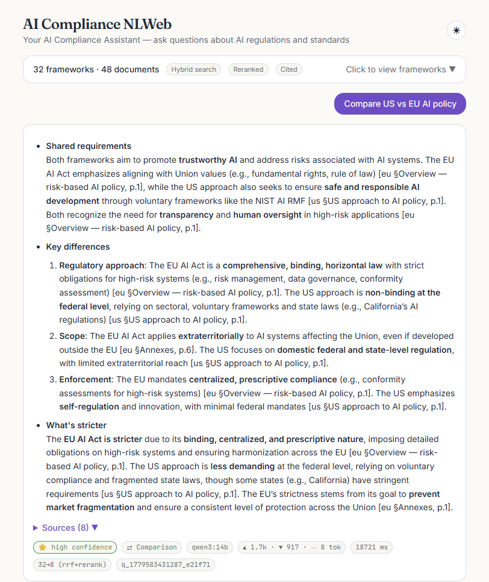
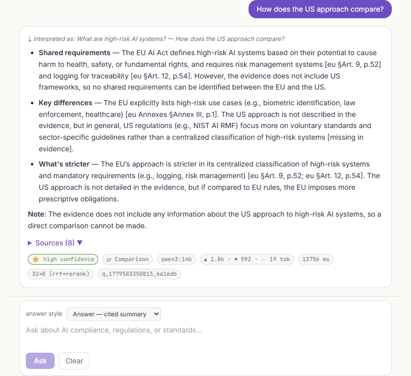
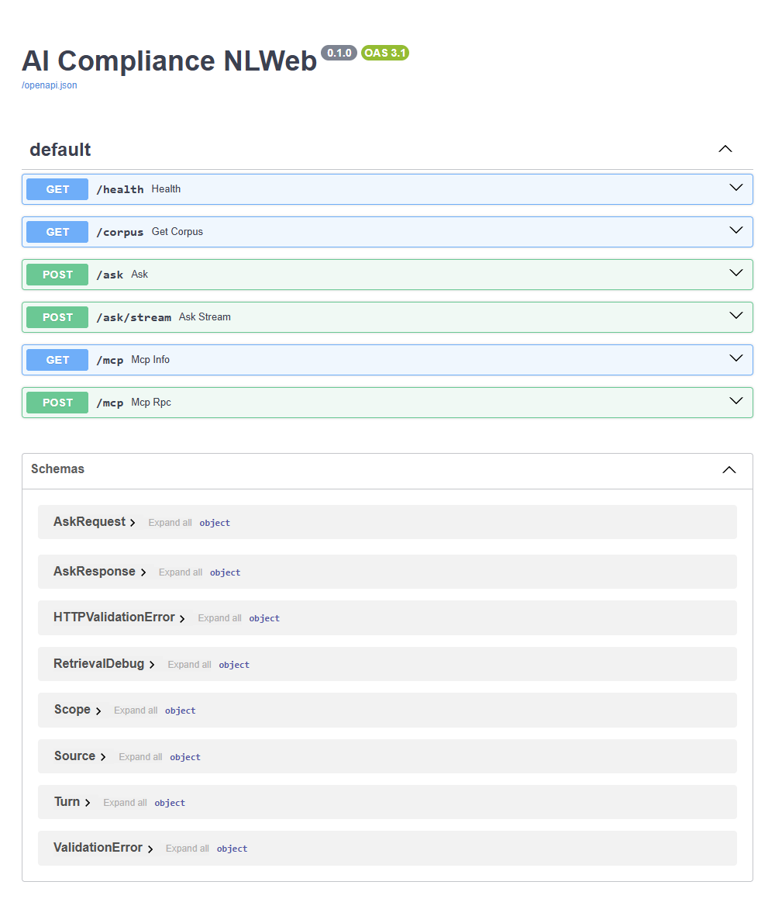

Conversational AI-compliance workbench · proof of concept · source on GitHub ↗
AI Compliance NLWeb
ask the world's AI rules — and let agents ask too
An NLWeb-style
layer over a curated, 100% open-access corpus of the world's AI rules and
standards — from the EU AI Act and GDPR to the NIST AI RMF, ISO/IEC 42001, and national
frameworks across five regulatory tiers. One retrieval + answer core, exposed two
ways: /ask for people (structured JSON) and /mcp for agents (MCP
tools). It is RAG-only and accuracy-first — hybrid retrieval and a reranker surface the
evidence, the model only explains what it can cite, and every claim carries a
[framework §section, p.N] citation. It runs fully on a local Docker stack or
on Azure.
- 48open-access documents · 32 frameworks across five tiers
- 36/36golden-QA pass-rate on the local stack (qwen3:14b)
- 100%of answers carry framework + section + page citations
- 2runtimes — local docker-compose & Azure, one codebase
01 — The NLWeb contract
One core, two contracts
The whole system is a single retrieval+answer core, exposed through two thin
adapters that share the same request payload and never fork their logic. People get
structured JSON shaped like a Schema.org ItemList; agents get the same
core as Model Context Protocol tools. A mode flag decides how much work
to do — and whether the language model runs at all.
For people · POST /ask
/ask
A grounded, cited answer as JSON — answer, ranked sources[], an additive Schema.org item_list, plus confidence, intent, scope and a token ledger.
also POST /ask/stream — SSE token streaming
For agents · GET/POST /mcp
/mcp
The same core as an MCP server over JSON-RPC (protocol 2025-11-25). Tools an agent can call directly:
ask_compliance— grounded, cited Q&Alist_frameworks·get_framework- prompt:
compare_jurisdictions
mode gates the spend: list retrieval only — no model call · summarize one citation-enforced synthesis pass · generate a longer drafted artifact.
02 — Agents
An ask-endpoint agents can call
NLWeb's premise is that every site will soon expose an /ask endpoint —
and that agents will want to call it. Here the MCP server is mounted on the same
FastAPI app and runs the identical pipeline a human query does, so an agent's
ask_compliance call returns the same grounded, cited answer the UI
shows — including the Schema.org item_list projection.
| MCP method | Returns |
|---|---|
| initialize | Server info + capabilities; echoes the client's protocol version |
| tools/list | The three tools with descriptions + input schemas |
| tools/call · ask_compliance | The full grounded answer (sources + item_list + token usage) |
| prompts/list · prompts/get | compare_jurisdictions — a templated comparison prompt |
Both endpoints enforce the same security: token scopes (ask:read, mcp:invoke), per-token/IP rate limiting, a locked CORS allow-list, and an audit log of every call.
03 — Retrieval & ranking
Hybrid retrieval, then a reranker decides
Dense vectors catch meaning; sparse keywords catch the exact statute number. The pipeline runs both, fuses them, then lets a cross-encoder reranker make the final call — so the eight chunks an answer cites are the most relevant of the candidate pool, not just the first eight a single index returned.
When a question names a specific framework, retrieval steers to that document — “GDPR requirements for AI?” searches the GDPR, not whichever EU text happens to say “AI” most often. Reranking is on by default; an env toggle turns it off for A/B comparison.
04 — The application
What a user actually sees
A focused chat surface over the corpus: a framework explorer that scopes retrieval, answers that stream in token-by-token with a live citation cursor, a sources panel, and a metrics bar under every reply. Click any frame to view it full size.
{kind=link}

{kind=link}

{kind=link}

[framework §section, p.N] markers and a sources panel listing the ranked, reranked chunks.{kind=link}

{kind=link}

{kind=link}

/ask, /ask/stream, /mcp, /corpus and /health — documented as OpenAPI at /docs.05 — Architecture
One codebase, two runtimes
Profile branching lives entirely in client factories, so the pipeline, router and API never ask which environment they're in. The local profile is a full docker-compose stack with zero cloud dependencies; the cloud profile is Azure-native and managed-identity throughout, provisioned by Bicep. A store's embedding dimension is immutable, so each profile is ingested independently into its own matched stack.
| Capability | azure (production) | local (docker-compose) |
|---|---|---|
| Layout / PDF | Azure Document Intelligence (prebuilt-layout) | unstructured.io |
| Answers | Azure OpenAI · gpt-4.1 | Ollama · qwen3:14b |
| Dense embeddings | text-embedding-3-small (1536-d) | mxbai-embed-large (1024-d) |
| Sparse / keyword | BM25 keyword index | BM25 (fastembed) |
| Hybrid fusion | Hybrid RRF (AI Search) | Reciprocal-rank fusion (RRF) |
| Reranker | AI Search semantic ranker | bge-reranker-base · cross-encoder (TEI) |
| Vector store | Azure AI Search — 2 indexes | Qdrant — 2 collections |
| API | Azure Container Apps | FastAPI |
| Web | Azure Static Web App | Vite dev / nginx |
| Auth | Managed identity (DefaultAzureCredential) | dev bearer token |
| Infra-as-code | Bicep | docker-compose |
Runs on GPU locally — the compose ollama service reserves an NVIDIA device. A deterministic mock backend powers tests and offline UI work with no model server at all.
06 — Evidence
Every answer shows its work
Trust in a regulatory tool comes from transparency, not confidence theatre. Under every reply is a metrics bar that exposes the whole decision: how sure the system is, which model ran, how many tokens it cost, how long it took, and how retrieval narrowed the corpus to the cited eight.
What are high-risk AI systems under the EU AI Act?
High-risk AI systems are those listed in Annex III or used as a safety component of regulated products… subject to risk management, data governance, transparency, human oversight, and conformity assessment [EU AI Act §Art. 6, p.4].
- 36/36golden-QA pass-rate + retrieval hit-rate (local · qwen3:14b)
- 100%intent-classification accuracy across every path
- 97%mean term coverage across the answer set
- SSEtoken streaming with accurate end-of-stream usage
A token ledger prices every call; an audit log records the principal, intent, sources, usage and latency of each query. Neither can break the answer path — they swallow their own errors and only log. When the evidence is insufficient, the system says so rather than guessing.